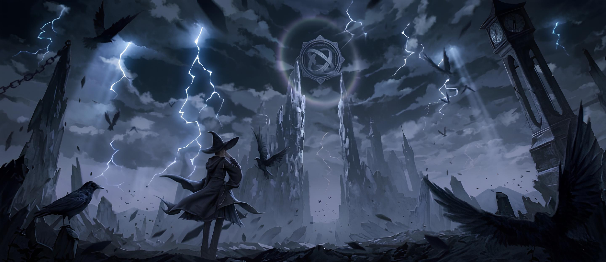

2018
Novel started serializing.
2020
Novel finished in Chinese and Translated in English.
2025
Adapted to anime.
2025
Manhua started serializing.
2027
Year for season 2.

Novel started serializing.
Novel finished in Chinese and Translated in English.
Adapted to anime.
Manhua started serializing.
Year for season 2.